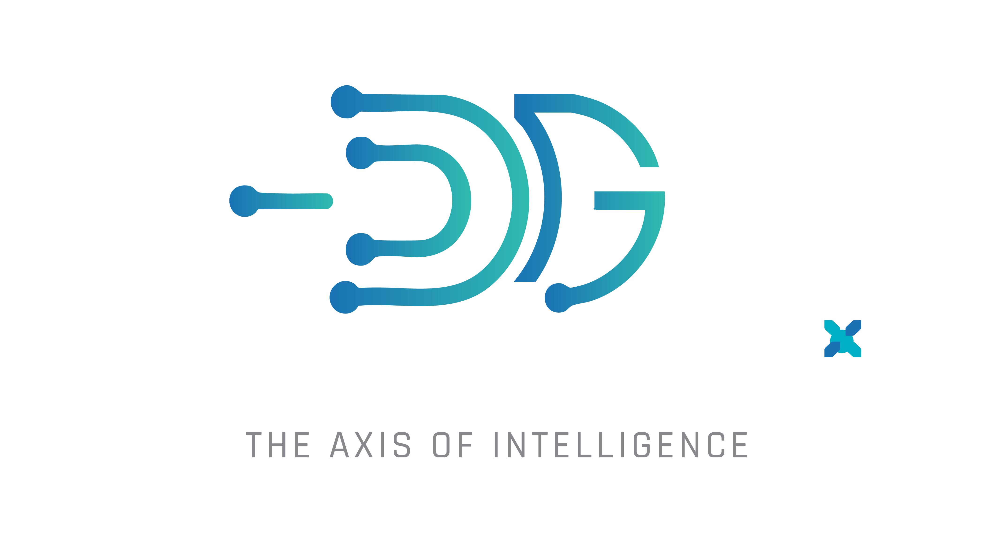

Ask the library, search every topic Tim has covered, or open a video for its Content-Graph breakdown. Every result links to the exact second.

The Axis of Intelligence · powered by DeGenito.AI
Ask the library, search every topic Tim has covered, or open a video for its Content-Graph breakdown. Every result links to the exact second.